Direct-OPD：通过直接在线策略蒸馏实现弱到强泛化
这篇论文的英文标题是 Weak-to-Strong Generalization via Direct On-Policy Distillation，一作 Shiyuan Feng 的机构标注覆盖 SIA-Lab of Tsinghua AIR and ByteDance Seed、清华 AIR、清华大学计算机系与北京大学，整体更像字节 Seed 与清华 AIR/SIA-Lab 共同推进的后训练方法工作。论文入口链接为 arXiv:2607.05394，项目页已核验为 Direct-OPD。它研究的不是“把小模型教给大模型”这一朴素蒸馏问题，而是如何把小模型上已经跑完的 RLVR 过程拆成可迁移的策略变化，再把这个变化施加到更强学生自己的在线状态上。
RLVR 能显著提升推理模型，但在每一个新的强模型上重新生成 rollout、打分并更新，成本会随模型规模放大而成为后训练瓶颈；直接模仿弱小 post-RL 教师又会把小模型自身能力上限一起蒸馏给强学生，甚至覆盖强学生本来已经更好的行为。Direct-OPD 要解决的核心矛盾，是如何只复用弱模型 RL 学到的“改变量”，而不是复用弱模型的最终策略。
1. 背景和问题
RLVR 之所以在最近的推理模型中重要，是因为它把可验证任务的最终答案转化为训练信号，让模型通过自己的 rollout 学会更可靠的推理路径。但这个机制也有一个很硬的系统成本：每次更新都要求当前目标模型自己采样大量回复，然后通过可验证 reward 或规则打分，再把这些轨迹用于策略更新。模型越大，单条 rollout 越慢，显存和吞吐压力越高，重复为每个强模型跑 RLVR 就越像一个不可持续的后训练瓶颈。Direct-OPD 的出发点是把“发现 RL 改进方向”和“把方向施加到强模型”拆开：先在较小模型上便宜地跑 RL，让它携带一个被 RL 重塑过的策略方向；然后让更强学生在自己的 on-policy 前缀上读取这个方向。
这里最容易犯的错误，是把弱模型跑完 RL 之后的最终策略当成教师，让强学生做普通 on-policy distillation。论文用 OPD 作为对照说明这个对象本身是错的：post-RL 弱教师的策略中同时包含两部分东西，一部分是 RL 对推理行为的有用改造，另一部分是小模型容量、预训练分布和表达能力的上限。强学生可能已经比这个弱教师更会解题，如果它被迫在自己访问的状态上贴近弱教师最终分布，就会把自己原本更好的高概率行为压下去。Direct-OPD 的关键判断是：弱模型不应该作为要被模仿的答案分布，而应该作为一个便宜的“RL 方向探测器”。
论文中的第一个反例很直接。R1-Distill-7B 初始 AIME 2024 ave@32 约 56.7，已经高于 JustRL-1.5B post-RL 教师的 51.3；普通 OPD 仍然尝试让 7B 学生贴近这个 1.5B 教师，结果性能被拖到约 50。也就是说，教师确实经过 RL，但最终教师本身仍然更弱，所以“教师最终策略”不是一个可迁移的监督载体。Direct-OPD 反过来比较同一个弱教师在 RL 前后的 log-prob 差异，只保留“RL 让哪些动作更可能、哪些动作更不可能”这个方向，再把它投到学生自己的候选 token 上。
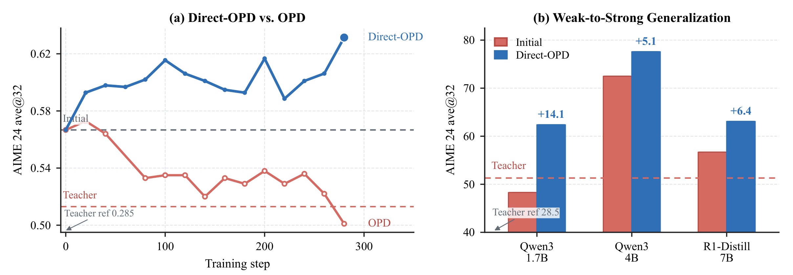
Figure 1 左图把这个区别压缩成一条曲线：蓝线 Direct-OPD 持续上升，红线普通 OPD 则下降到弱教师附近，说明强学生被弱教师最终策略约束时会丢掉已有能力。右图更重要，因为它不是单个模型偶然现象：同一个 R1-Distill-1.5B 到 JustRL-1.5B 的 policy shift，可以给 Qwen3-1.7B 带来 +14.1、给 Qwen3-4B 带来 +5.1、给 R1-Distill-7B 带来 +6.4 的 AIME 2024 提升。这里的“弱到强”不是因为弱教师更强，而是因为 RL 前后差分中存储了一个更纯的推理改进信号。对工程读者来说，这张图也提示了一个后训练复用方式：小模型 RL 产物的价值不只在最终 checkpoint，还在其相对于 reference checkpoint 的方向差。
这篇论文和推荐系统的关系不是任务层面的 recommendation，而是训练范式层面的“便宜策略探索、昂贵策略部署”。推荐、广告排序或搜索重排中也常有类似结构：一个较便宜的 proxy、teacher、simulator 或离线探索模型先发现方向，再把方向约束到线上大模型或主排序模型的可服务分布上。Direct-OPD 的启发在于，它没有要求 proxy 的最终分布比主模型更好，而是用 reference/post 差分消掉 proxy 的固有偏好，尽量只留下被优化目标推动的增量信号。这个区别也影响验收方式：若只看弱教师最终指标，会误判它“不够强、不值得蒸馏”；若看 RL 前后差分，就会把同一次小模型 RL 运行拆成可被强模型消费的局部奖励来源。
2. 方法
Figure 1 在方法区用于对照后续公式：普通 OPD 直接贴近弱教师最终策略，会把强学生拉回弱教师上限；Direct-OPD 读取弱教师 RL 前后的策略差分，再在强学生自己的 on-policy 状态和 top-k 候选上使用这个方向信号。
2.1 从 OPD 到教师 policy shift
论文先把普通 OPD 写清楚。给定 prompt $x$，学生当前策略 $\pi_\theta$ 生成自己的回复 $\hat y$，于是每个前缀 $s_t=(x,\hat y_{<t})$ 都是学生真实会访问的状态。在这些状态上，OPD 查询教师 $\pi_T$ 的下一个 token 分布，并最小化学生分布 $p_t$ 与教师分布 $q_t$ 的 KL。为了降低成本，实际实现只在学生 top-k 支持集 $S_t$ 上比较。这个接口本身是 Direct-OPD 继承的：仍然让学生自己采样状态，仍然只在学生认为可能的候选动作上读教师信号。真正改变的是教师信号的定义。Direct-OPD 不使用 post-RL 教师的绝对概率 $\pi_T(v\mid s_t)$，而是使用教师和它自己的 pre-RL reference $\pi_{Tref}$ 的差值，这使监督对象从“教师现在偏好什么”变成“RL 相对原始弱模型改变了什么”：
符号解释：$\pi_T$ 是弱模型经过 RL 后的策略，$\pi_{Tref}$ 是同一个弱模型在 RL 前的 reference，$\Delta_T$ 是同一回复 $y$ 在同一 prompt $x$ 下的序列级 log-ratio。这个量为正，表示 RL 让弱模型更倾向该回复；为负，表示 RL 抑制该回复。它的作用是把弱模型本来就喜欢什么从信号中扣掉，只保留 RL 造成的方向变化。如果普通 OPD 在学习弱教师“现在长什么样”，Direct-OPD 学的是弱教师“被 RL 推向哪里”。
论文进一步用 KL-regularized RL 的 closed-form optimum 说明这个差分不是拍脑袋设计。若某个 reward $r$、reference policy $\pi_{ref}$ 和 KL 系数 $\beta$ 形成标准目标，则最优策略满足：
符号解释：$\pi^*$ 是 KL 正则化目标的最优策略，$\pi_{ref}$ 是参考策略，$r(x,y)$ 是 reward，$\beta$ 控制 reward 与 KL 之间的权衡，$Z(x)$ 是同一 prompt 下的归一化常数。因为 $Z(x)$ 对同一 prompt 的不同回复是常数，policy/reference log-ratio 就恢复了 reward 的相对排序。把 $\pi^*$ 换成弱教师 post-RL checkpoint，把 $\pi_{ref}$ 换成弱教师 pre-RL checkpoint，就得到 Direct-OPD 的隐式 reward 解释：小模型 RL 结果把 reward-like signal 存在了 policy space 里。
2.2 Direct-OPD 序列目标与 token 级分解
有了教师差分，Direct-OPD 对强学生定义的序列级目标如下。这个目标把 $\Delta_T$ 放进学生自己的采样分布里，而不是让学生去采样弱教师的轨迹；因此后续每个 reward 读取点都发生在强学生真实会访问的状态上：
符号解释：$\pi_\theta$ 是正在训练的学生，$\pi_S$ 是学生初始 checkpoint，$\alpha$ 是学生端 KL anchor 强度，$\Delta_T$ 来自弱教师 RL 前后差分。这个目标的含义很清楚：学生在自己的采样分布上寻找能获得正 teacher shift 的回复，同时不要离自己的初始能力太远。Direct-OPD 因此不是把强学生拉向弱教师，而是把弱教师的 RL-induced direction 作为 reward，仍然以强学生自己的初始策略为参考点。
这个目标对应的理想最优策略可以写成下式。它把学生初始策略作为底座，再用弱教师的 policy shift 做指数倾斜，因此非常直观地显示了“保留强学生自身 prior、只叠加 RL 方向”的结构：
符号解释：$\pi^*$ 是学生在 Direct-OPD 目标下的理想策略，$\pi_S$ 提供学生自身的 prior，括号中的比例项是弱教师的 RL 前后差分，$1/\alpha$ 控制这个差分对学生分布的倾斜程度。这个式子解释了为什么强学生可以超过弱教师：学生的底座不是 $\pi_T$，而是 $\pi_S$；弱教师只提供一个乘性的方向修正。若 $\pi_S$ 已经在某些状态上优于弱教师，Direct-OPD 不要求它回退到教师最终分布，而是在它自己的候选动作上比较哪些 token 更符合弱教师 RL 的方向。
由于语言模型自回归分解，序列级差分也可以分解到 token。这个分解把原本只能评价整段回答的隐式 reward 拆成每个前缀、每个候选 token 上的局部打分，是 Direct-OPD 能做 dense credit assignment 的基础：
符号解释：$s_t$ 是由 prompt 和已生成前缀组成的状态，$v$ 是候选 token，$r_t(v)$ 是教师 RL 在该前缀上对候选 token 的局部鼓励或抑制。这个分解是方法落地的关键：它把最终答案稀疏 reward 变成了每个前缀、每个候选 token 上的 dense signal。对长推理任务来说，这比只看最终是否答对更容易形成局部信用分配，也更接近 OPD 已经成熟的 top-k 查询接口。
2.3 top-k Rao-Blackwellized 梯度与 stop-gradient 系数
实际训练不会枚举全词表。论文在学生当前 top-k 支持集 $S_t=\operatorname{TopK}_v\pi_\theta(v\mid s_t)$ 上重归一化学生分布；这一步同时服务于计算成本和信号边界，因为只有学生自己认为可能的 token 才进入教师差分打分：
符号解释：$S_t$ 是学生当前最可能的 k 个 token，$\bar p_t(v)$ 是在这个局部候选集合上的学生概率。这个限制有两个作用：一是减少教师/reference 评分成本，二是确保 Direct-OPD 只在学生自己可能选择的动作上读 teacher shift，而不是用弱教师的全词表偏好硬改学生。这一点对弱到强特别重要，因为强学生和弱教师可能有不同 thinking pattern，全词表强行对齐更容易变成错误模仿。
如果只用实际采样到的 token 做 policy gradient，方差会很大。Direct-OPD 已经知道 top-k 集合中每个候选 token 的 $r_t(v)$ 和 $\bar p_t(v)$，因此把单 token Monte Carlo 权重替换为 top-k 期望：
符号解释：外层仍然由学生采样轨迹，所以状态分布是 on-policy；内层对学生 top-k 候选做加权求和，所以每个前缀的动作选择被 Rao-Blackwellized。$\bar p_t(v)$ 是学生当前认为该 token 可行的概率，$r_t(v)$ 是弱教师 RL 前后差分提供的局部 reward，$\nabla_\theta\log\pi_\theta(v\mid s_t)$ 则更新学生对该 token 的概率。最终实现还把 $\bar p_t(v)r_t(v)$ detach 成静态系数，避免对权重本身反传出额外 Jacobian。这个 stop-gradient 处理看似细节，但它决定了 surrogate 是否仍然像 policy-gradient 目标，而不是变成“学生概率越大权重越大”的自引用 softmax 损失。
这一段方法的工程含义是：Direct-OPD 的训练成本接近“学生 rollout + 两个小教师打分 + 学生更新”，不需要为强学生运行稀疏 reward RL，也不需要训练额外 reward model。风险在于 teacher/reference log-ratio 不是全局可靠 reward；它只在学生访问的状态和候选 token 上有意义，一旦学生漂移到两个弱教师都不熟悉的区域，差分可能变成大但不可信的数值。所以论文后面特别强调 response length 和 KL 系数，而不是把 dense reward 当成越大越好的目标。
2.4 adaptive KL 控制
固定 $\alpha$ 的问题来自尺度不匹配。教师差分 $\Delta_T$ 的尺度由弱教师当初 RL 时的 reward 尺度和 KL budget 决定，但强学生端并不知道这些量；同一个 $\alpha$ 对不同 teacher-student pair 的含义可能完全不同。论文因此使用一个轻量 adaptive KL controller，根据 batch-level mean teacher-shift reward 的符号调整 KL 系数：
符号解释：$\alpha_m$ 是第 $m$ 次训练迭代的 KL 系数，$\bar r_m$ 是当前 batch 上学生加权的 teacher-shift 均值，$\epsilon$ 是小步长，论文默认 0.01，clip 范围默认 $[0.5,2.5]$。若当前状态上的 teacher shift 平均为正，控制器提高 $\alpha$，避免学生过度追逐局部正 reward；若平均为负，控制器降低 $\alpha$，让学生有空间远离被 RL 抑制的 token。它和常见“把 KL 拉到目标值”的控制器不同，驱动信号不是 KL 本身，而是 teacher-shift reward 的符号。
从方法结构看，Direct-OPD 其实由三层约束共同稳定：第一层是 reference/post 教师差分，避免直接模仿弱教师最终策略；第二层是学生 on-policy top-k，只在强学生自己会考虑的动作上读信号；第三层是学生到初始 checkpoint 的 KL anchor，并通过 adaptive KL 调整强度。三层缺一都会出问题：没有差分会退化为弱教师 imitation，没有 on-policy top-k 会把弱教师不适合强学生的偏好硬塞进来，没有 KL anchor 则可能把 log-ratio 当成可被 exploit 的 reward。论文的实验设计基本就是围绕这三点逐项验证。
3. 实验结果
3.1 弱教师 RL 方向能提升更强学生
实验首先回答最核心的问题：如果学生已经强于 post-RL 弱教师，Direct-OPD 是否仍然有效。论文使用两组教师 pair：R1-Distill-1.5B 到 JustRL-1.5B，以及 Nemotron-1.5B 到 QuestA-Nemotron-1.5B。学生包括 R1-Distill-7B、Qwen3-1.7B、Qwen3-4B。评价主要看 AIME 2024 和 AIME 2025 的 ave@32。这个设置比单一 teacher/student 更有说服力，因为它跨了教师训练来源、学生模型族和初始能力水平。
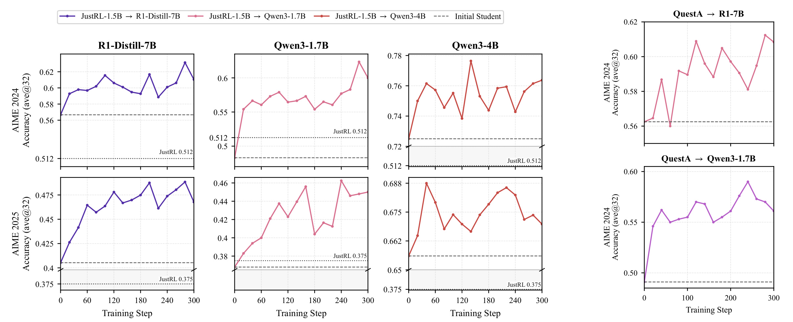
Figure 2 的读法是看每个学生的起点和训练曲线是否相对 post-RL 教师有提升。左侧 JustRL pair 中，R1-Distill-7B 和 Qwen3-4B 的初始水平已经高于 JustRL-1.5B 教师水平，但 Direct-OPD 仍然让它们继续上升。这排除了“只是把弱教师知识灌给更弱学生”的解释。右侧 QuestA pair 进一步说明信号并不绑定 JustRL 这一条训练管线，Nemotron 到 QuestA 的 policy shift 也能迁移到 R1-Distill-7B 和 Qwen3-1.7B。曲线有波动，但整体趋势显示学生不是被拉向教师绝对水平，而是在自己的状态空间里使用了教师 RL 的方向。尤其是 Qwen3-4B 曲线，它的初始能力远高于 JustRL 教师虚线，却仍能从差分信号中获得增益，这正是弱到强泛化最需要证明的情形。
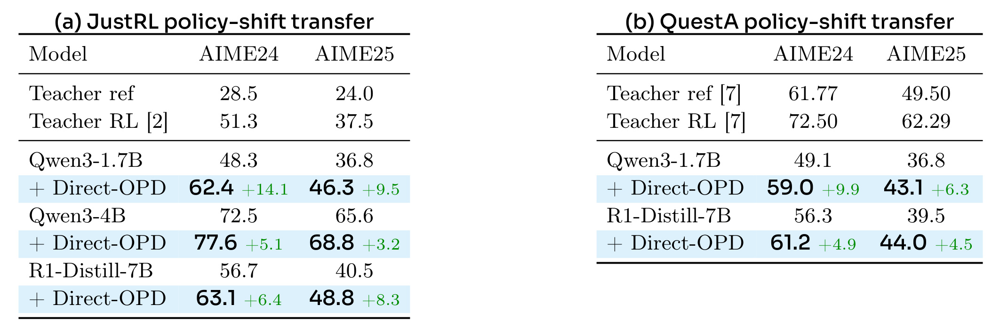
Table 1 给出更精确的数字。JustRL policy-shift transfer 下，Qwen3-1.7B 从 AIME24 48.3 提到 62.4，AIME25 从 36.8 提到 46.3；Qwen3-4B 从 72.5 提到 77.6、从 65.6 提到 68.8；R1-Distill-7B 从 56.7 提到 63.1、从 40.5 提到 48.8。QuestA policy-shift transfer 下，Qwen3-1.7B 从 49.1 提到 59.0，R1-Distill-7B 从 56.3 提到 61.2。对这张表不能只看“提升都为正”，还要看教师水平：JustRL 教师在 AIME24 是 51.3，Qwen3-4B 初始就是 72.5，仍然能受益。这是 Direct-OPD 作为“隐式 reward 迁移”而不是“能力上限迁移”的关键证据。
3.2 compute-matched 路线优于直接大模型 RL
第二组实验问的是工程问题：如果最终目标是提升 R1-Distill-7B，直接在 7B 上跑 RL 是否一定更好。论文比较两条路径。第一条是 R1-Distill-7B 直接 RL；第二条是在 R1-Distill-1.5B 上先跑 RL，取不同训练步数的 checkpoint 作为 $\pi_T$，以 base 1.5B 作为 $\pi_{Tref}$，再用 Direct-OPD 把这个 shift 转给 7B。这里 T300、T600、T900、T1200、T1500 表示小教师 RL 训练到对应步数后再迁移。
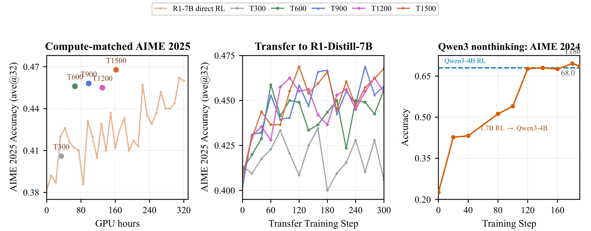
Figure 3 左图把总 GPU hours 放在横轴，显示 T600 到 T1500 的弱到强路线在相近或更低计算成本下位于直接 R1-7B RL 曲线之上。中图显示不同小教师 checkpoint 的 transfer trajectory，T300 较弱，T900-T1500 更有用，说明并不是任意 RL checkpoint 都同样好；小模型 RL 轨迹中的不同阶段编码了不同 policy shift。右图把 Qwen3 nonthinking 也纳入：Qwen3-1.7B RL 的 shift 迁移到 Qwen3-4B 后达到直接 Qwen3-4B RL 的 68.0 AIME 2024 水平。对落地来说，结论不是“小模型必然替代大模型 RL”，而是小模型可以作为更便宜的探索环境，先找到方向，再用很短的 Direct-OPD 阶段把方向部署到更强模型。
论文还报告了一个成本量级：R1-Distill-1.5B 的 1500-step RL 约需 32 张 A100 跑 160 小时，R1-Distill-7B 直接 RL 约需 320 小时；Direct-OPD 迁移阶段只需约 8 张 A100 跑 4 小时。这个比较当然依赖具体实现、batch、长度和硬件，但它解释了为什么作者把 Direct-OPD 定位为“复用 RL outcomes”。如果公司内部已经有多个小模型 RL 试验产物，那么 reference/post checkpoint pair 可以成为后续强模型后训练的资产，而不是一次性模型。
3.3 多个 policy shift 可以顺序组合
第三个实验测试两个独立 RL 方向能否叠加到同一个学生上。论文先把 R1-Distill-1.5B 到 JustRL-1.5B 的 shift 迁移到 Qwen3-1.7B，再从该 checkpoint 继续用 Nemotron-1.5B 到 QuestA-Nemotron-1.5B 的 shift 训练。若 Direct-OPD 只是把学生拉向一个教师分布，两个弱教师可能相互覆盖；若它确实在学生状态上读取 reward-like direction，则不同 RL 方向有机会顺序组合。
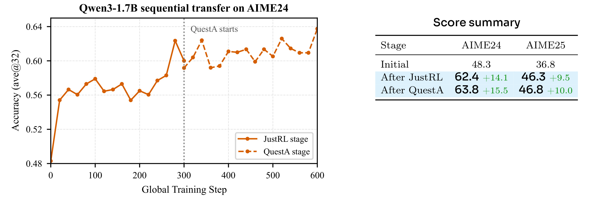
Figure 4 显示第一阶段 JustRL shift 已经把 Qwen3-1.7B 从 AIME24 48.3 提到 62.4，AIME25 从 36.8 提到 46.3；第二阶段 QuestA shift 继续把 AIME24 推到 63.8、AIME25 推到 46.8。增益变小但仍为正，说明第二个 shift 不是简单重训同一方向，而是在第一阶段 checkpoint 上仍有额外信息。这个结果对长期模型训练很有意义：不同小模型 RL run 可能在不同数据、prompt 或 reasoning style 上学到互补方向，Direct-OPD 提供了一种在强学生上逐个应用这些方向的接口。需要注意的是，顺序组合也会累积分布漂移风险，所以第二阶段能否继续提升，仍取决于新的 teacher shift 是否在第一阶段学生的状态分布上可读。
3.4 机制诊断：不是普通 token imitation，也不是 entropy collapse
如果 Direct-OPD 有效只是因为学生逐渐靠近 post-RL 教师的高概率 token，那么它和 OPD 的区别会被削弱。论文用 top-k overlap 诊断这一点：在学生访问的状态 $s_t$ 上，分别计算学生 top-k token 集合和 post-RL 教师、teacher reference 的 top-k token 集合有多少重合。对应公式为：
符号解释：$T^S_k$ 是学生 top-k token 集，$T^C_k$ 是比较策略 $C$ 的 top-k token 集，$C$ 可以是 post-RL 教师或教师 reference。这个指标越高，说明学生的高概率候选越像某个教师 checkpoint；如果 Direct-OPD 必须通过 imitation 起效，成功曲线应伴随 post-RL teacher overlap 明显上升。
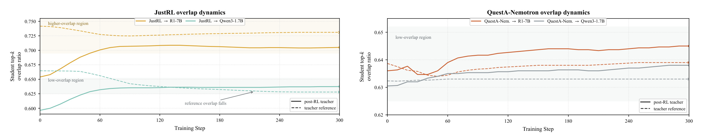
Figure 5 的结果比“overlap 越高越好”更细。JustRL 到 R1-7B 的 pattern-aligned 情形进入了较高 overlap 区域，比较符合 OPD 直觉；但 QuestA-Nemotron 跨 pattern 的两条曲线保持在较低 overlap 区域，仍然有正迁移。这意味着 Direct-OPD 的信号可以在学生自己的候选 token 内重排行为，而不要求学生最终变成教师的 top-k 模式。换句话说，教师 pair 提供的是某些局部动作的相对增减，不是一个需要整体复制的分布模板。这个诊断也解释了为什么弱教师最终能力低于学生时仍然可用：只要差分方向在学生候选集中有信息，绝对 overlap 低并不必然失败。它同时提醒复现者不要把 overlap 当成唯一成功指标；跨模型族或跨 thinking pattern 时，低 overlap 可能是预期状态，而不是失败信号。
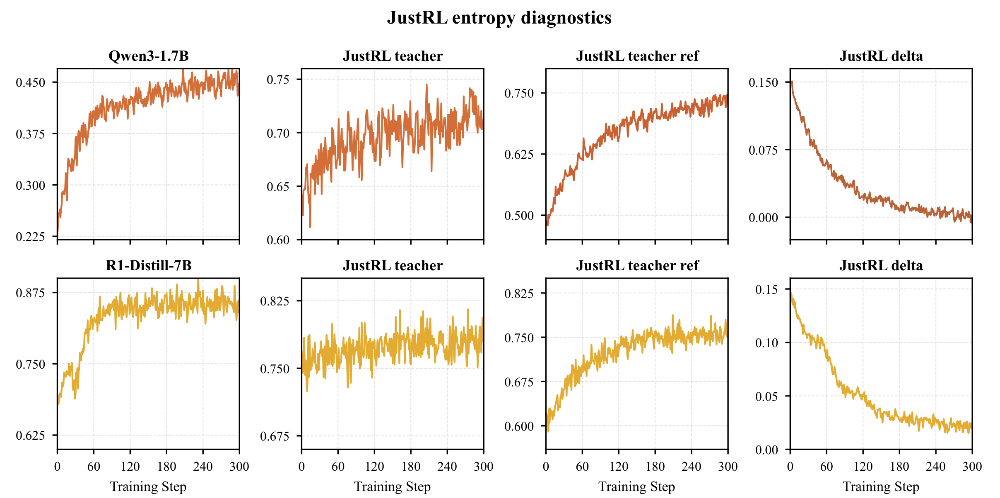
Figure 6 检查另一个反例：如果 Direct-OPD 只是把 actor 压成低熵分布，overlap 低也可能是假象。图中 Qwen3-1.7B 和 R1-Distill-7B 的 actor entropy 没有坍缩，post-RL teacher 与 reference 的 entropy gap 反而逐步收窄。这说明训练确实改变了学生访问哪些区域以及这些区域上教师差分如何被读取，而不是简单把学生概率集中到少数 token。对部署来说，这个诊断很重要，因为 dense reward 很容易诱导 reward hacking；entropy 结果至少显示作者的 KL 和 top-k 设计没有在这些实验里产生明显塌缩。更细看上下两行，学生 entropy 的量级和走势并不相同，但都没有出现快速归零，这说明方法没有依赖单一模型族的偶然稳定性。
3.5 horizon 和 KL 决定 dense reward 是否可靠
Direct-OPD 的训练默认使用 2k response horizon。论文没有把这当成随意超参，而是做了长度扫描：512 太短可能接触不到足够推理状态，4k 在部分学生上不稳定，2k 在 Qwen3-1.7B 和 R1-Distill-7B 上更稳。长度问题本质上是 teacher-shift reward 的分布外问题：训练越长，学生访问越多后缀状态，但弱教师/reference 在这些长后缀上的 log-ratio 是否仍然可信，并不能保证。
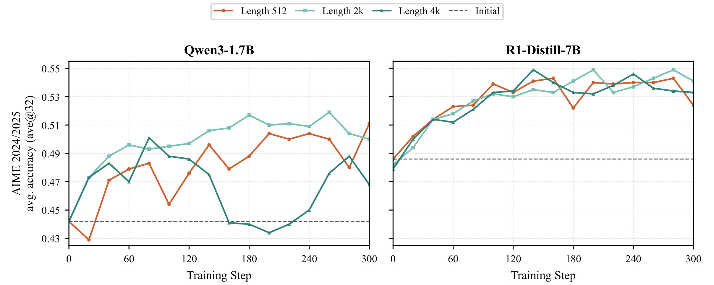
Figure 7 说明 2k 不是为了省算力随便裁短，而是在两个学生上给出更稳定验证曲线。Qwen3-1.7B 上 2k 走势明显优于 512 和 4k；R1-Distill-7B 上三条线都能提升，但 2k 没有表现出明显不稳定。这里的结论不应外推为所有任务都用 2k，而应理解为：Direct-OPD 的 rollout horizon 是控制信号可信区间的超参。若换成更长数学题、代码题或推荐对话任务，需要重新验证教师差分在后缀状态上的可靠性。
论文进一步用长 rollout 上的 cumulative gap 检查短 horizon 训练是否只改变了 2k 前缀。它定义：
符号解释：$K_t$ 是 actor 在长 rollout 第 $t$ 个前缀上的 top-16 token 集，$g_t$ 是这些候选 token 的 JustRL 相对 R1-Distill reference 的加权 log-prob gap，$G_T$ 是到位置 $T$ 为止的累计 gap。若 $G_T$ 更高，表示 actor 的高概率 token 更偏向 JustRL 相对 reference 的方向。这个诊断不直接等于答案正确率，但能看出短训练是否改变了长推理中的 token 倾向。
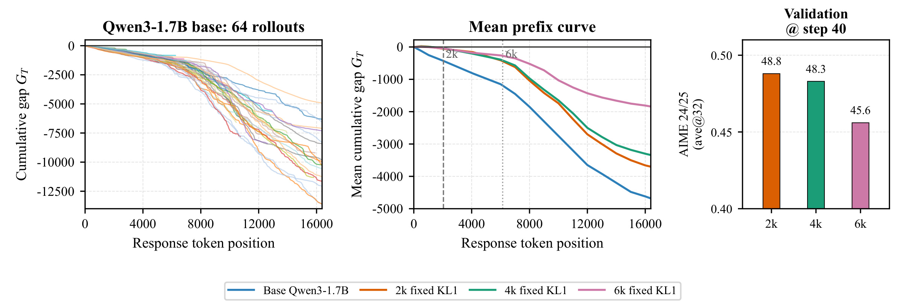
Figure 8 左图显示 base Qwen3-1.7B 的 64 条长 rollout 累计 gap 大多向负方向漂移，说明未训练模型更像 reference。中图显示经过 2k、4k、6k 训练后，平均曲线都高于 base，且 2k 训练的影响延伸到 16k 位置之后；右图却显示 6k 在 step 40 的 AIME 验证最差，2k 最好。这正好支持论文的警告：更长 horizon 可以让行为更强地朝教师 shift 移动，但这种移动未必带来更好答案，因为后缀上的弱教师差分可能更噪声、更偏离真实验证目标。因此这张图的重点不是“2k 一定最佳”，而是“行为漂移强度”和“任务正确率”之间不能直接画等号。它还说明短前缀训练并非只改写开头模板，而是可以改变后续长推理中 actor 的候选 token 排序；只是这种改变需要用验证集筛选，而不能只看累计 gap 是否更高。
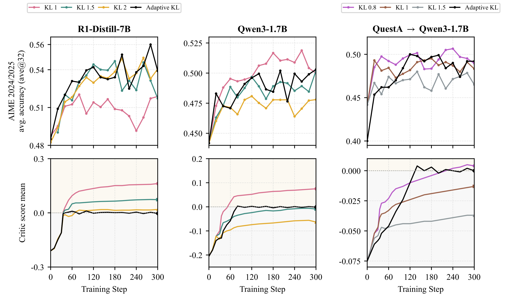
Figure 9 则说明 KL 系数没有一个固定最优值。R1-Distill-7B、Qwen3-1.7B、QuestA 到 Qwen3-1.7B 三种设置中，固定 KL 的最优曲线不同，mean teacher-shift reward 也不能直接作为越大越好的指标。adaptive KL 的黑线更像把 reward 均值拉回平衡区域：当平均 shift 过正时加强约束，当过负时放松约束。这个结果和方法公式一致，也给复现者一个很实际的提示：如果只 sweep 一个固定 KL，可能把 Direct-OPD 误判为不稳定；但 adaptive KL 不是万能，它依赖 batch-level reward sign，仍然需要看验证集而不是只看 reward 曲线。
3.6 评价与训练口径
论文的 AIME 结果统一使用 ave@32，所以数字不是单次采样准确率。附录 Table 2 给出采样温度 0.7、top-p 0.95、每题 32 个样本、最大生成长度 31,744。这个设置对读数很重要：ave@32 更能反映模型在多次采样下的解题能力，但也意味着提升幅度和解码温度、样本数相关，不能直接拿来和单样本 greedy 准确率比较。
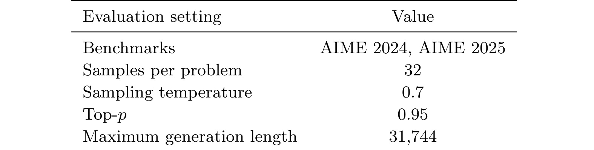
Table 2 的价值在于固定了评估口径。AIME 2024/2025、32 samples per problem、temperature 0.7 和 top-p 0.95 共同决定了 ave@32 的可比性；最大生成长度 31,744 也说明推理时允许很长输出，而 Direct-OPD 训练只用较短 response horizon。这一训练/评估长度不一致正是 Figure 8 要解释的问题。复现时若改为更低温度、更少样本或更短最大生成长度，论文中的 gains 不应被机械期待保持同样数值。尤其是 ave@32 会放大模型在多次采样中找到正确解的能力，若业务场景只允许一次生成，仍要单独评估单样本表现。这个表也提醒读者，Direct-OPD 的训练收益是在统一 decoding 口径下比较出来的，不能把不同温度、不同样本数的外部 benchmark 直接并排引用。
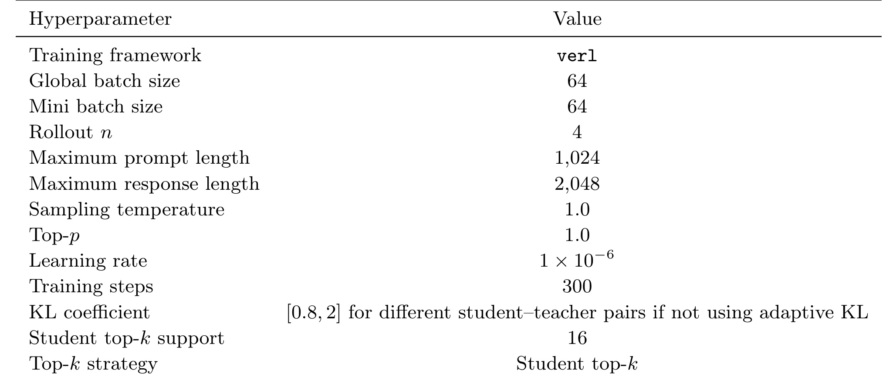
Table 3 则是训练配方的最小复现清单：verl 框架、global batch size 64、rollout n 为 4、最大 prompt 长度 1024、最大 response 长度 2048、temperature 1.0、top-p 1.0、学习率 $1\times10^{-6}$、300 steps、非 adaptive 时 KL 系数在 0.8 到 2 之间、student top-k support 为 16。这里最值得注意的是 top-k support 和 response length：它们直接决定教师/reference 评分成本和 dense reward 的状态覆盖范围。若把 top-k 扩大很多，成本和噪声都会变化；若把 rollout n 或 batch 调大，则 reward 均值和 adaptive KL 行为也可能改变。
综合实验来看，Direct-OPD 的证据链比较完整：Figure 1 证明普通弱教师 imitation 会失败；Figure 2 和 Table 1 证明 policy shift 能跨教师/学生迁移；Figure 3 证明它可能比直接大模型 RL 更省；Figure 4 证明多个 shift 可以叠加；Figure 5 和 Figure 6 排除简单 imitation 与 entropy collapse；Figure 7 到 Figure 9 说明 horizon 与 KL 是可靠性控制旋钮。它的不足也同样清楚：所有主结果集中在数学推理/AIME，teacher pair 都是 1.5B 级小模型，任务 reward 本身可验证；换到开放式生成、推荐排序、多目标安全或用户满意度任务时，teacher/reference log-ratio 是否仍能作为可靠隐式 reward，需要重新建立验证闭环。
4. 总结
4.1 我的判断
我认为这篇论文最有价值的点，不是又提出一个蒸馏 loss，而是把小模型 RL 产物重新定义成“方向资产”。传统蒸馏关心教师最终输出，Direct-OPD 关心同一教师 reference/post 之间的差分；传统弱到强容易被弱监督上限卡住，Direct-OPD 用强学生自己的初始策略和 on-policy 状态承载这个差分。这种设计非常适合后训练成本越来越高的场景：如果每次强模型升级都重新跑 RLVR，成本会爆炸；如果能复用历史小模型 RL run 的方向，就有机会把探索和部署解耦。
但我不会把它理解成“以后不用大模型 RL”。Direct-OPD 的假设是弱教师 RL 前后差分确实编码了对强学生有用的 reward-like signal，而且这个信号在学生访问的状态上仍然可靠。论文通过 AIME、top-k overlap、entropy、length sweep 和 KL sweep 给了相当多证据，但这些证据仍在数学推理和可验证 reward 场景内。开放式 reward、偏好数据、推荐目标或多目标业务约束会更复杂，因为 reference/post 差分中可能混入数据偏差、prompt 样式偏差和策略安全偏差。
4.2 工程启发与复现建议
若要复现或迁移这条路线，我会先检查四件事。第一，必须保存弱教师 RL 前后的成对 checkpoint，且 tokenizer、prompt 格式和 scoring 接口要能对齐；如果只拿到 post-RL checkpoint，就无法消掉 reference 偏好。第二，要先做小规模 student on-policy top-k 诊断，看 teacher/reference log-ratio 在学生候选 token 上是否有稳定分布，是否出现极端大值或符号混乱。第三，要把验证集作为主判断，不要只看 mean teacher-shift reward；Figure 9 已经说明 reward 均值不是越大越好。第四，要记录 rollout length、top-k、KL、teacher scoring latency，因为这些决定训练成本和信号可靠范围。
对推荐系统或搜索排序的启发是，可以考虑用较便宜的策略或模拟环境产生“优化前后差分”，而不是直接蒸馏一个弱模型排序分布。例如在小 ranker、小 LLM reranker 或离线 policy 上做 RL/偏好优化后，把优化前后 logit 差、排序差或动作偏好差转成主模型的局部辅助目标。但这里要非常谨慎：推荐中的 reward 往往多目标且受曝光偏差影响，reference/post 差分可能把探索流量、样本选择和业务规则一起编码进去。因此 Direct-OPD 的思想可以迁移，原公式不能无脑照搬。
4.3 局限与后续跟进
主要局限至少有四点。第一，实验集中在数学推理，且主要指标是 AIME 2024/2025；这证明了推理任务上的可能性，但还不能说明多领域开放生成同样有效。第二，teacher pair 的 RL 过程、数据集和 prompt 格式会影响差分质量，论文虽然测试了 JustRL 和 QuestA 两组，但还没有覆盖更杂的 RLHF/RLAIF 或工具调用任务。第三，adaptive KL 只是基于 batch mean shift 的符号控制，它简单、便宜，但未必能处理 reward 分布多峰或局部极端值。第四，Direct-OPD 需要同时查询 post-RL 教师和 reference 教师，即使教师较小，生产级训练仍要考虑双教师服务、缓存和吞吐。
后续我会重点跟进三个方向。第一，看项目页或代码是否公开完整训练脚本，尤其是 top-k teacher scoring、stop-gradient 系数和 adaptive KL 在 verl 中如何实现；这些细节决定能否复现论文曲线。第二，关注是否有后续工作把 policy-shift transfer 用到代码、工具调用或 agent 长任务，因为这些场景更能检验 short-horizon signal 是否真的能泛化到长轨迹。第三，观察是否有人把多个小教师 shift 做选择、加权或过滤，而不是像论文中顺序串接；如果能根据验证集或诊断指标选择最可靠的 shift，Direct-OPD 会更像一个可管理的后训练资产库。
总体上，Direct-OPD 给了一个干净的弱到强后训练接口：用小模型便宜探索，用 reference/post 差分提取隐式 reward，用强学生自己的 on-policy top-k 状态承接信号，再用 KL 控制可靠区域。它最值得借鉴的是“只迁移优化造成的变化，而不迁移弱监督者本身”的思想；最需要警惕的是把 log-ratio 当成绝对 reward 后，在分布外状态上过度优化。对于已经有小模型 RL 实验积累的团队，这篇论文很值得作为复用 RL 产物的技术路线参考。